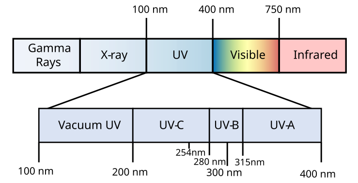

Personal Information Processing Policy: Neotech UV collects only the minimum necessary information required to process corporate consultations and deliver professional service inquiries.
Data Items Collected: Inquiry Type, Name, Mobile Phone Number, Email Address, and Message Details.
Purpose of Collection: To evaluate and respond to customer inquiries, facilitate engineering consultation, and maintain a historical reference for ongoing client communication.
Retention Period: All submitted information is securely retained for a period of 2 years following receipt, after which it is permanently deleted.
Cookie Policy: Neotech UV does not collect, store, or track cookie data. Our website is designed to be a static information portal. It is a private browsing experience without user tracking or sessions.